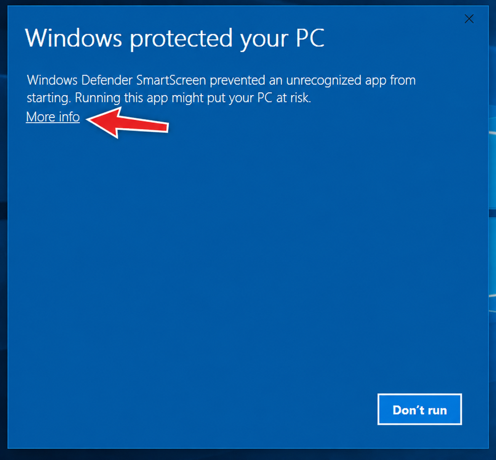
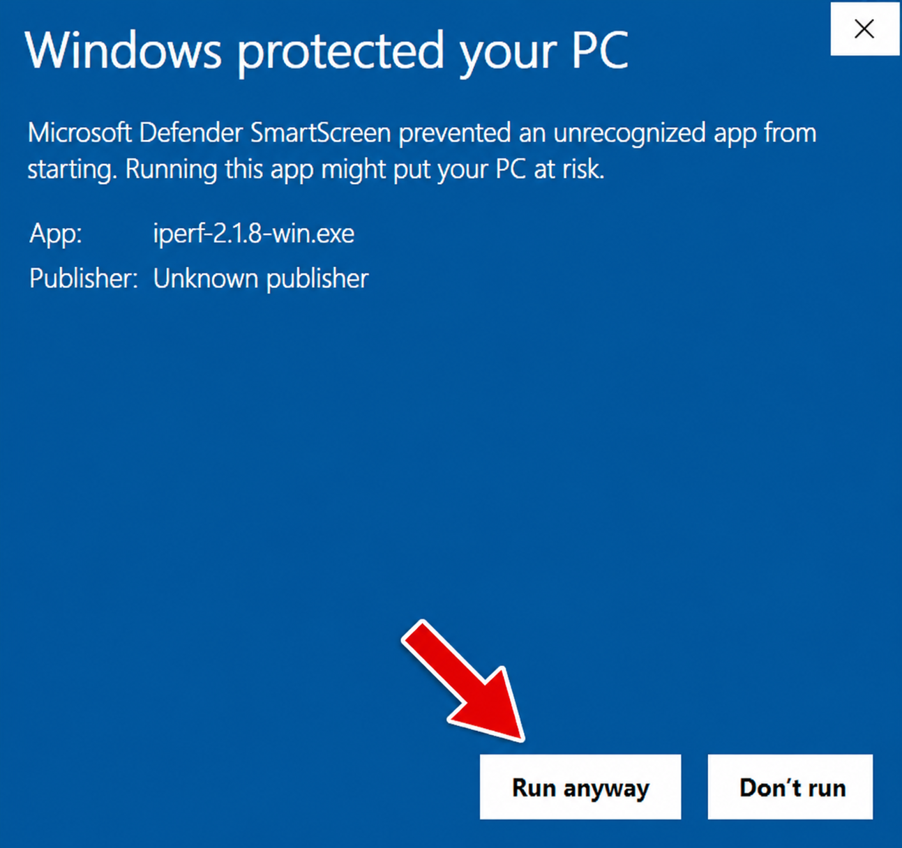

Drop in your ZIP
InputSelect the project archive you want to convert.
Upload a ZIP containing HTML, CSS, and JavaScript files, and Web to EXE converts it into a Windows EXE application using Electron and Node.js.
Web to EXE is a desktop utility for people who want a faster path from a basic web project to a Windows executable. Instead of manually assembling an Electron packaging setup every time, the application handles the repetitive work for you.
Because installing tools, configuring a wrapper, and running packaging commands is useful knowledge — but it should not be mandatory every time you just want to ship a simple project.
Web to EXE runs on your local machine. Your ZIP is inspected, wrapped, packaged, and returned as a Windows executable from the same PC.
Select the project archive you want to convert.
The app looks for the expected entry point and validates the project structure.
Electron and Node.js are used to prepare and package the Windows application.
When packaging finishes, the generated Windows executable is ready to download.
Right now, Web to EXE focuses on basic vanilla projects. That keeps the conversion path predictable while the app is still early.
Broader project support is planned for later versions rather than pretending V1 can package everything.
New or unsigned Windows apps can be shown as “unrecognized” by SmartScreen. That warning is about publisher reputation/signing and does not, by itself, mean Windows detected malware.


Download the portable Windows build. No account, no installer wizard, no sign-up.
Web to EXE was created to make the basic web-project-to-Windows-app workflow less annoying. It handles the repetitive packaging work while keeping the product focused on a simple, understandable flow.
V1 is deliberately limited. The goal is to make the supported path work well first, then expand compatibility in future versions.